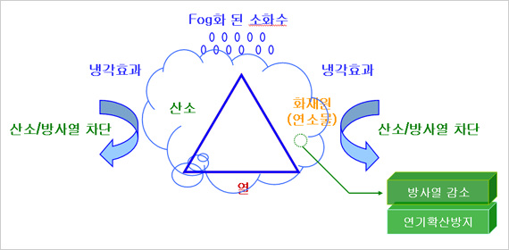
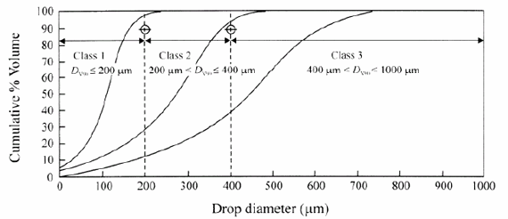
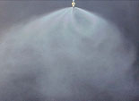

| |
| Water-mist system의 화재진압 메카니즘 |
|  |
| |
| Water-mist의 정의 |
|  |
| NFPA 750 : 최소 작동압력에서 Dv0.99 ≤ 1000㎛ |
| |
|  |
미세 물 분무장치는 기존의 스프링클러 시스템보다
물 소모량은 10%이며
효율은 약 2배 이상 뛰어난 장치로써
시설 및 장비에 손상을 입히지
않고 소량의 물을 이용해
신속하게 대규모 화재를 진압할 수 있는 장치입니다.
또한, 화재지역 내에 연기로 인하여 시야가 제한되는 상황을
최소화 할 수 있는 장치입니다. |
|
|
|